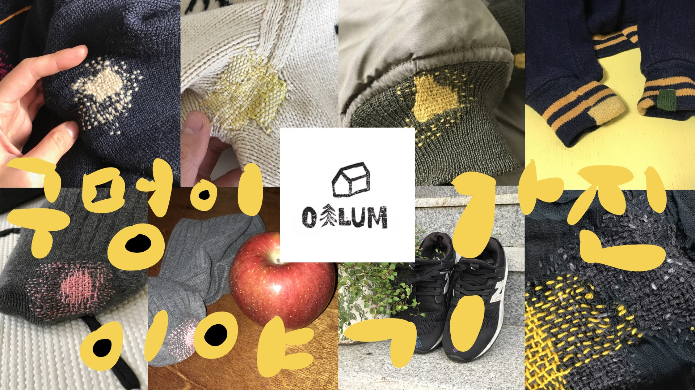

Repair Studio
안녕하세요.
저는 구멍이 가진 이야기를 사랑하는 작업자입니다. 실을 엮으며, 상한 원단 위에 새로운 이야기를 그립니다.
스튜디오 오알룸은 1:1 맞춤 수선 의뢰를 받고 있습니다. 수선하는 행위는 단순히 옷을 고치는 행위가 아니라, 빠른 패션 사이클을 늦추고 지구와의 관계를 회복하는 일이라고 생각합니다.
수선 방법은 옷마다 다르게 고민합니다. 어떤 부위는 일부러 눈에 띄는 실 색으로 대담한 스티치를 넣어 하나의 디자인 요소로 드러내고, 어떤 부위는 원단과 최대한 가까운 색의 실로 섬세하게 스티치를 넣어 티가 나지 않도록 작업합니다. 손바느질, 머신 봉제, 패치워크, 데님 패치, 누비 스티치, 원단 이어 붙이기 등 상황에 맞는 방법을 그때그때 선택합니다. 특히 Visible Mending(보이는 수선)을 중요하게 생각하며, 보로·사시코 같은 전통 수선에서 영감을 받되 한국적인 누비와 손바느질의 질감, 현대적인 리페어 디자인을 함께 씁니다.
수선을 맡기실 때는 단순히 “이 구멍을 어떻게 막을까”만 보지 않습니다. 옷 전체의 형태와 소재, 손상된 이유, 힘이 많이 들어가는 부위, 앞으로도 계속 입을 수 있을지를 함께 살펴본 뒤 방법을 제안해 드립니다. “티 안 나게 해달라”는 요청도 원단과 손상 정도에 따라 완전히 감추는 편이 좋을지, 수선 흔적을 살리는 편이 더 좋을지 상담을 통해 함께 결정합니다.
바느질은 오래된 역사이자 전통입니다. 이 전통이 사라지지 않도록, 마음과 마음을 잇는 행동을 함께하고 싶습니다.

Basic
수선 가격은 Basic(기본) + 재료, 작업시간, 난이도에 따라 최종 결정됩니다.
Basic(기본)
- 자켓
- ₩25,000~
- 상의
- ₩15,000~
- 하의
- ₩20,000~
- 기타
- ₩10,000~
- 데님
- ₩25,000~
- 니트
- ₩25,000~
- 특수소재
- ₩30,000~
특수소재 예: 가죽, 패딩 등
Basic(기본) 비용은 최소 작업 공임이며, 실제 수선 범위에 따라 추가 비용이 발생합니다.
수선 기법별 가격
| 범위 | KRW | USD |
|---|---|---|
| SMALL | ₩30,000~ | $25~ |
| MEDIUM | ₩55,000~ | $40~ |
| LARGE | ₩80,000~ | $55~ |
| MULTIPLE | ₩120,000~ | $85~ |
| FULL | ₩180,000~ | $125~ |
| 범위 | KRW | USD |
|---|---|---|
| SMALL | ₩60,000~ | $40~ |
| MEDIUM | ₩90,000~ | $65~ |
| LARGE | ₩140,000~ | $100~ |
| MULTIPLE | ₩180,000~ | $125~ |
| FULL | ₩250,000~ | $175~ |
| 범위 | KRW | USD |
|---|---|---|
| SMALL | ₩50,000~ | $35~ |
| MEDIUM | ₩80,000~ | $55~ |
| LARGE | ₩120,000~ | $85~ |
| MULTIPLE | ₩180,000~ | $125~ |
| FULL | ₩250,000~ | $175~ |
| 범위 | KRW | USD |
|---|---|---|
| SMALL | ₩70,000~ | $50~ |
| MEDIUM | ₩100,000~ | $70~ |
| LARGE | ₩150,000~ | $105~ |
| MULTIPLE | ₩200,000~ | $140~ |
| FULL | ₩300,000~ | $210~ |
Process
진행 안내
- 01상담 및 사진 접수 — 수선이 필요한 부위와 옷 상태를 사진과 함께 보내주세요. 브랜드나 구입 시기는 상관없습니다.
- 02견적 및 방법 제안 — 옷 상태를 확인한 뒤, 어울리는 수선 방식과 예상 견적을 안내드립니다.
- 03작업 진행 — 상담된 내용을 바탕으로 직접 작업합니다. 작업 중 새로운 손상 부위가 추가로 발견되면 다시 안내드린 뒤 진행합니다.
- 04완성 및 전달